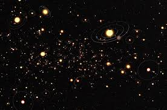

We know planets to be objects that orbit around the Sun. Exoplanets, on the other hand, are planets that orbit around other stars.
They are generally very hard to identify with just telescopes, like we use for the planets that orbit the Sun. Instead, in order to identify exoplanets, we need to use other methods.
One such method is by looking for what are called "wobbly" stars. These "wobbly" stars are essentially stars that have planets that don't orbit perfectly around its center. This causes the star to look like it's wobbling.
There are many other techniques in which we can identify exoplanets, but this is one of the most straightforward methods.
To date, there have been more than 4,000 exoplanets discovered and are for sure exoplanets. However, there are thousands of other candidates that need further research to determine if they are actually exoplanets.
The search for new exoplanets also includes a search for a planet that can possibly support life, a mission that has failed so far with exoplanets.
But who knows, maybe one day in the future we will be living on an exoplanet!
